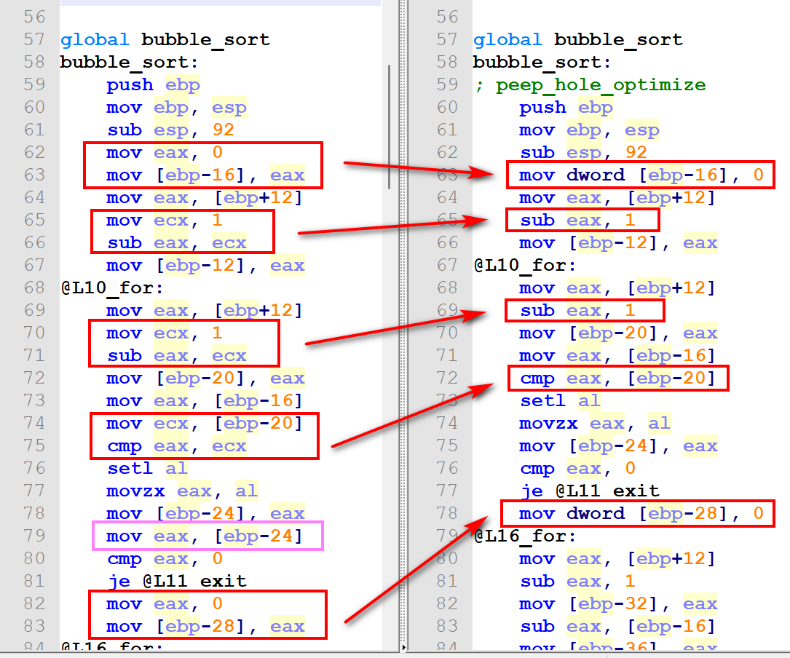
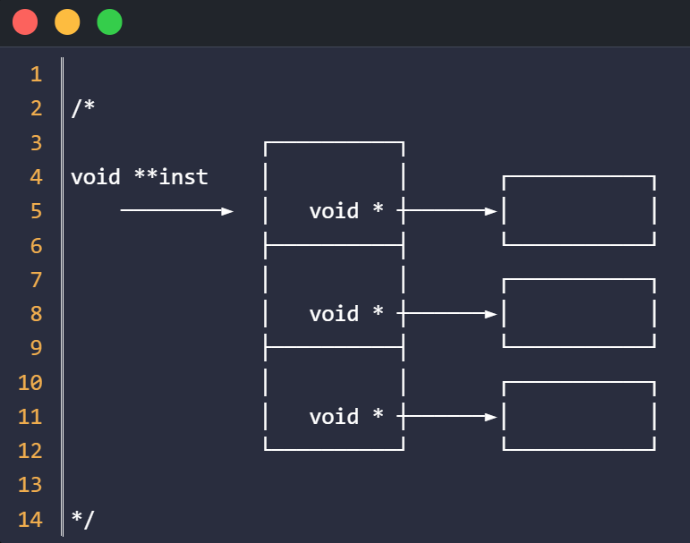
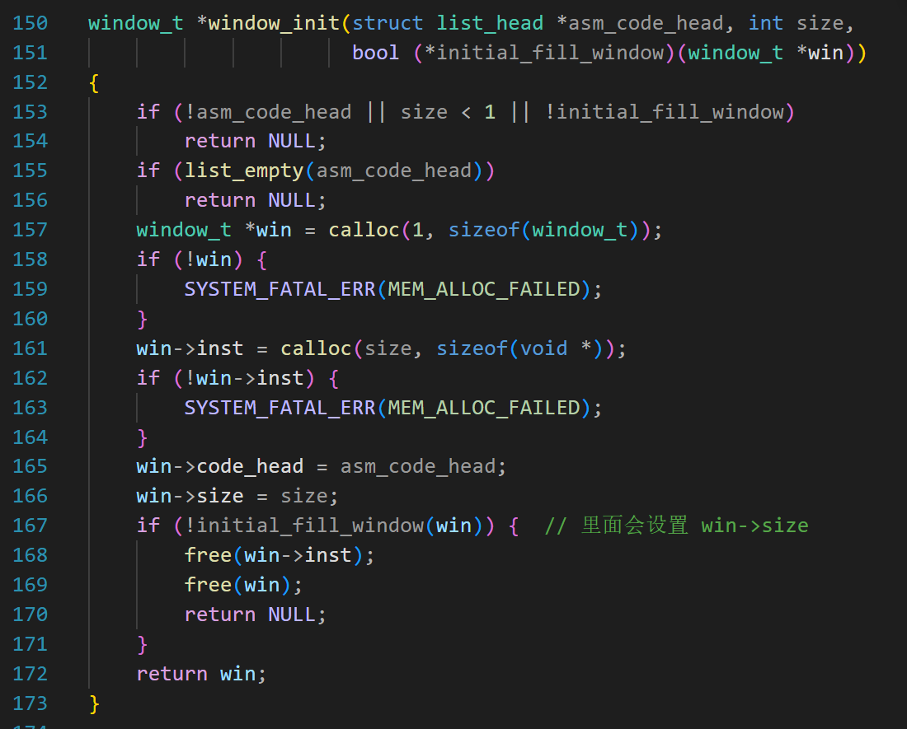
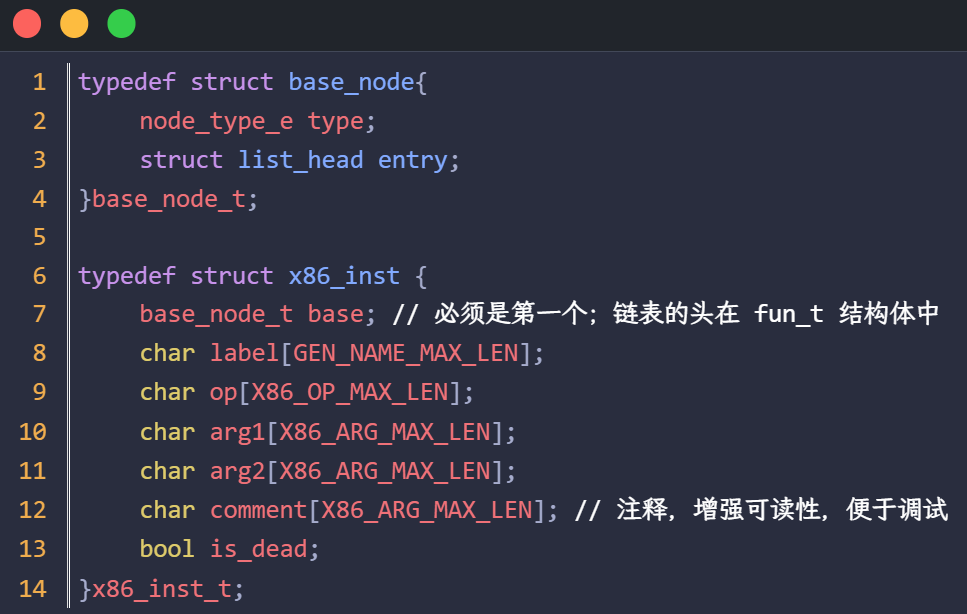
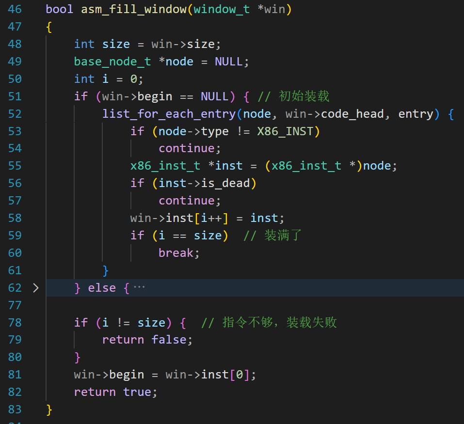
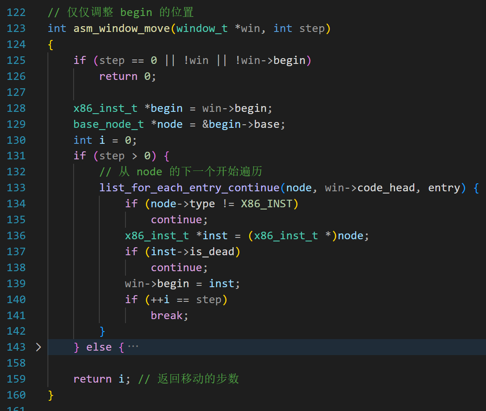
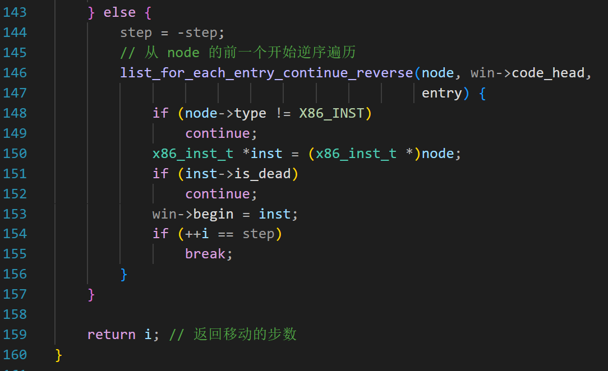
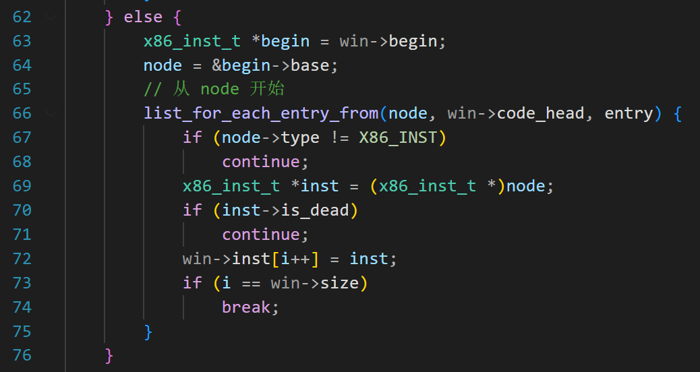
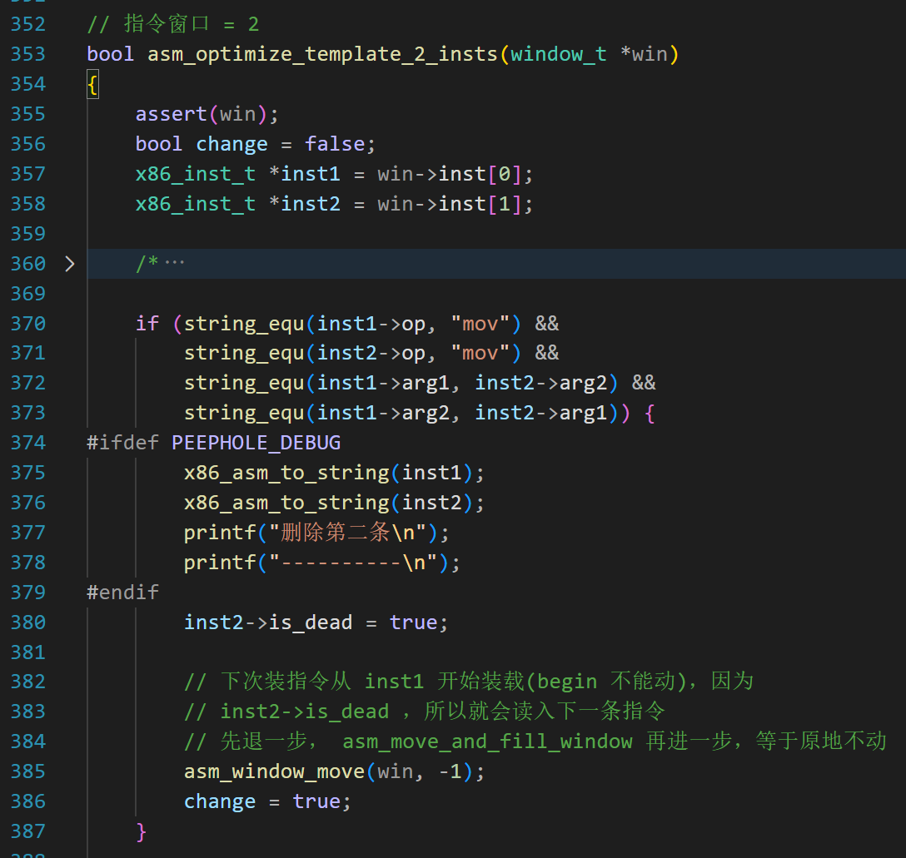

第23天：汇编代码的窥孔优化
汇编代码的窥孔优化
上节课我们生成了汇编代码，算是一个阶段性的胜利。不过我提醒自己不要得意，能否再向前迈一步呢？
请看下面的图：

是不是有点眼花缭乱？不要着急，我为读者解读。
先看左边的 62~63 行
1 | |
熟悉汇编代码的读者肯定看出来了，这 2 条指令可以合并为 1 条
就是右边的第 63 行
1 | |
同理，左边的第 65~66 也可以化简成右边的第 65 行
再看左边第 78~79 行，先把 eax 的值写入内存 [ebp-24]，然后又从 [ebp-24] 把值拿出来给 eax ，后面这步实属多余。
所以，第 79 行可以删除。
所以，我说的 “再向前迈一步” 的意思看看生成的汇编代码还能不能化简，尽可能让它变得简洁。
目标明确了，如何做呢？
前面为读者讲解了四种优化方法，分别是常量传播，复写传播，活跃变量分析，懒惰代码移动。
现在为读者讲解我的最后一招：“窥孔优化”
什么是窥孔优化
窥孔优化（Peephole Optimization）是编译原理中的一种局部代码优化技术，它通过分析一小段连续的指令（称为"窥孔"窗口），识别并替换其中的低效或冗余指令序列，从而生成更高效的代码。
名字中的 “窥孔”（peephole）是一个形象的比喻：想象你通过一个小孔观察代码，只看局部片段，不关心全局结构。
优点：
-
实现简单：只需维护一个滑动窗口，算法复杂度低
-
独立性强：不依赖全局信息，可独立应用于代码段
-
多次应用：可多次遍历代码，每次优化可能产生新的优化机会
局限性：
- 局部性限制：窗口大小有限，无法识别跨窗口的优化机会
- 优化范围小：只能进行局部优化，无法进行全局数据流分析
- 可能错过优化：某些优化需要更广的上下文信息
窥孔优化的步骤如下：
1、确定窗口大小，比如 2（可以装 2 条连续的指令）。根据窗口的大小，拿个纸板，挖出一个孔
2、想象我们的汇编指令是一条很长的纸带，把孔对准纸带的开始位置
3、看看小孔里面的 2 条指令，是不是有优化的可能。如果有，就优化，例如替换成一条新的指令
4、把孔向下移动，执行第 3 步；或者遇到纸带的结尾，结束整个过程。
以上只是形象的说法，并不是让你真的找个纸板去打孔，不过你非要这样做我也拦不住。
需要注意第 3 步，是不是有优化的可能？说起来很轻松，实际上是要做模式匹配，就是判断窗口中的代码是不是具有某种特征。
还是前面的那个例子
1 | |
我们需要判断：
1、指令 1 的源操作数是一个数字或者寄存器的名字
2、指令 2 的源操作数和指令 1 的目的操作数是同一个寄存器
当以上 2 个条件都满足的时候，我们用指令 1 的源操作数去替换指令 2 的源操作数；再把指令 1 删除。
窗口结构体
1 | |
首先，要有一个窗口。slide_window 是滑动窗口的意思。
第 3 行的 code_head 用于指向指令链表的头节点。
第 5 行的 begin 表示当前窗口滑动到哪里了，它指向窗口内的第一条有效指令。
第 4 行的 inst 是一个 void ** 类型的指针，我的设计是这样的：
假设窗口大小是 3。我们用数组来“装”这 3 条指令。

如图所示，中间的 3 个连续的框子代表数组。数组中的元素是 void * 类型，仅保存指令的地址。
因为窥孔优化不但可以用于汇编代码的优化，对于之前生成的中间指令，也可以用。
只要指令是一条一条线性排列的，就可以用窥孔优化。
所以，是 void * 类型，而不是某个具体类型的指针（例如 x86_inst_t *）窗口大小也是不确定的，根据你的优化策略来。
例如你发现了一种模式，能把具有某种特征的 4 条连续指令合并成一条，那窗口大小就是 4。
所以数组大小不确定，需要动态分配内存。
假设窗口大小是 3，如果是为整型数组分配内存，代码如下面第 1 行。
1 | |
现在是为 void * 类型的数组分配内存，照猫画虎，就是上面第 3 行。
所以，才会有 void **inst 这个字段。
窗口的初始化

第 157，为结构体 window_t 分配内存。
第 161，根据窗口大小，分配数组的内存。
第 165，填写 code_head,让它指向指令序列链表的头节点。
第 166，填写窗口大小（必须是 >= 1）
第 167 行，给窗口里面填指令
initial_fill_window 这个参数是一个指向函数的指针，马上就讲。
之所以设计成指向函数的指针，是因为前面说了，窥孔优化不单单可以用于汇编指令。
可能有的读者忘了 base_node_t 是什么，我们复习一下。

为了把不同类型的结构体（简称大结构体）加入链表，我们在大结构体里嵌入了 base_node_t 类型的结构体，名字叫 base，且它是大结构体的第一个成员，如上面第 7 行。
同以前的用法一样，base_node_t 的 struct list_head 用于形成链表，base_node_t 是用户节点。
因为 base 是大结构体的第一个成员，所以它的地址就是大结构体的地址；可以把 base（base_node_t 类型） 看成是某个指令（x86_inst_t 类型）的化身。
首次填充窗口
对于汇编指令的窥孔优化，我们用 asm_fill_window 函数填充窗口。

window_init 函数执行到第 167 行的时候，win->begin 等于 NULL，说明是第一次装指令。
第 52 行，遍历汇编指令链表，第 53 行跳过其他类型的节点。
第 56 行，跳过死代码，因为窥孔优化可以做多遍，在此过程中，有的指令被标记为死代码。
第 58 行，记录指令的地址到数组
第 59~60，一旦装满，就 break;
如果窗口移动到了链表的末尾，或者指令本来就特别少，可能会出现指令不够的情况，第 78 行判断是否装载成功。
如果失败，则返回 false 给调用者，以便结束此轮优化。
首次填充窗口完毕，就可以做模式识别和优化了。不管能不能优化，接下来需要移动窗口。
窗口的滑动

此函数第二个参数表示要滑过多少条指令，可正可负，如果是负数，表示窗口往上滑动。
窗口滑动的本质是移动 begin 指针，让 begin 指向后面的指令或者先前的指令。
第 131~142 行，是 step 是正数的情况。
第 129 行，得到用户节点 base 的地址，就是 &begin->base，这个地址在数值上等于窗口内第一条指令的地址（因为base是大结构体的第一个成员）133 行的第一个参数 node,可以认为它代表窗口内的第一条指令；
list_for_each_entry_continue 宏的作用是跳过 node，从 node 的下一个位置开始遍历（从零开始计数）；
第 136 行得到下一条指令的地址，相当于向下滑动 1 个位置；
第 139 行更新 win->begin；
第 140 行让 i 增加 1；
一直循环，一旦要移动的步数 step 等于计数器 i，就 break
例如参数 step 是 2，那么此函数执行后，begin 会向后移动 2 个有效位置。
再打开刚才折叠的代码

如果参数 step 是负数，说明要向前移动。
list_for_each_entry_continue_reverse 表示从 node 的前一个节点开始遍历，而且是逆序遍历。
第 159 行的返回值表示实际移动了多少步，因为接近指令序列末尾的时候， i 可能小于 step。
再次填充窗口
每次滑动窗口后，都需要重新填充窗口。注意，窗口滑动后，win->begin 已经指向了新的位置。
asm_fill_window 函数的另一半代码如下：

第 63~66 表示从 begin 指示的位置开始装载指令；
list_for_each_entry_from(pos, head, member) 表示从 pos 开始遍历，而不是从第一个节点！
其他的代码不再赘述。
控制程序
接下我们看控制程序
1 | |
第 4 行，完成窗口的初始化，指令窗口大小为 2， 填充窗口用的函数是 asm_fill_window，此函数已经介绍了。
第 8 行开始是 do-while 循环。
asm_optimize_template_2_insts 这个函数马上就讲，功能就是做特征匹配，若匹配上了就优化。
第 10 行 asm_move_and_fill_window 这个函数代码如下：
1 | |
先调用 asm_window_move 移动窗口，如果返回值和参数 step 指定的步数相等，说明移动成功
如果第 3 行的 “==” 不成立，说明到了代码序列的末尾，移动不了了，那就返回 false（第 6 行）
移动成功后调用 asm_fill_window 往窗口填充新的指令（第 4 行），并返回此函数的结果，如果填充过程出现了问题，也会返回 false;
下面为读者介绍 asm_optimize_template_2_insts 函数，优化的细节在这里面。

第 360 行的注释打开如下：
1 | |
假设窗口里面有 2 个指令，
inst1 : mov [ebp-48], eax
inst2 : mov eax, [ebp-48]
很明显，第二条是多余的，可以不要。
指令的特征我也写出来了，如上面第 5~7 行。
代码就更简单了，如上面第 370 到 373，首先判断 2 个指令的操作码都是 “mov”，其次 inst1->arg1 和 inst2->arg2 相同，inst1->arg2 和 inst2->arg1 相同如果符合条件，就可以优化了。
第 380 行把第二条指令标记为 is_dead
第 385 行，此时 begin 是指向 inst1 的，因为 inst2 是死指令，如果不移动窗口，asm_fill_window 会把 inst2 后面的那条有效指令（称为inst3）填进来;
这是对的，因为 inst 1 和 inst3 组合到一起说不定也能优化。
但是我们的控制程序写的是 while (asm_move_and_fill_window(win, 1));
也就是说窗口会向后移动一个指令，这和我们的期待不符，我们希望不要移动。
这个也好办，第 385 行，我们调用 asm_window_move(win, -1);
先往前面移动一个，等执行 asm_move_and_fill_window 的时候，再往后移动一个，等于原地不动。
本文到这里就结束了，下节课我们把窥孔优化用在中间代码上，哈哈，更好玩。